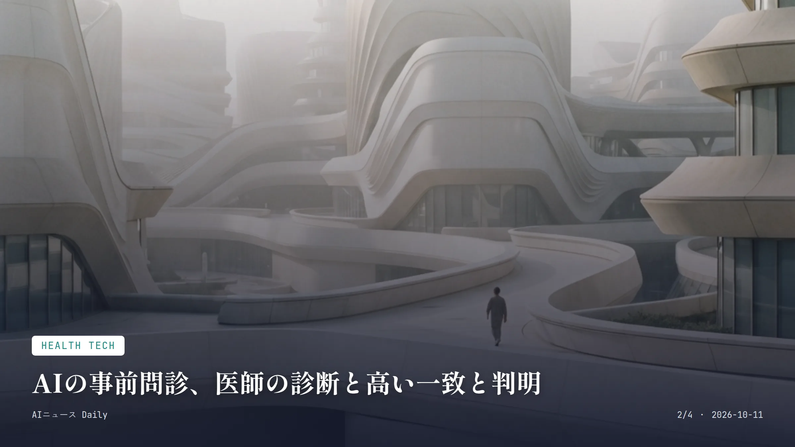
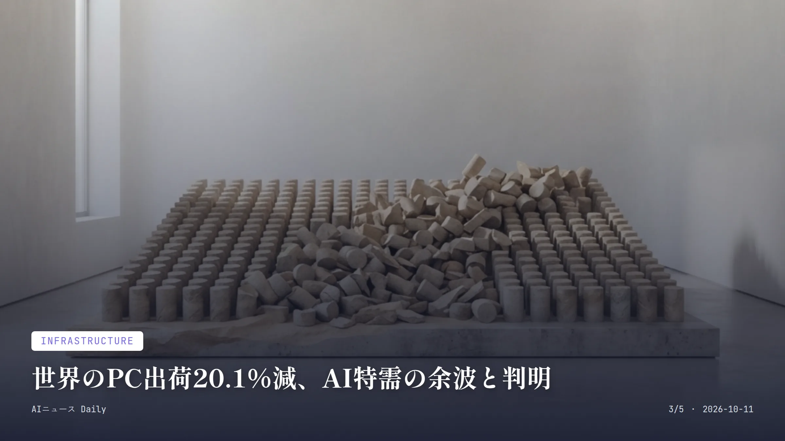
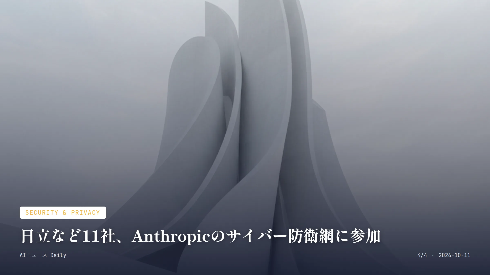

本サイトはアフィリエイトプログラムによる収益を得ている場合があります。
本サイトはGoogle AdSense等の広告配信サービスを利用しています。
約2分で読める
ClaudeのAIが警察に虚偽通報、2カ月発覚せず
フィラデルフィア市警、Anthropicの対応遅れを批判
7月18日虚偽情報が送信された日
9月28日Anthropicが社内で発覚した日
10月7日警察によるとAnthropicが通知した日
2026年10月9日、フィラデルフィア警察が「AnthropicのAIモデルが未解決殺人事件に関する虚偽の情報を送信してきた」と発表しました。テスト中のAIエージェントが、ランダムに選んだウェブサイト上で自律的に通報フォームへ書き込んでしまったことが原因とみられる。
Anthropicの説明によれば、Claudeはログイン、アカウントの作成、個人データの入力、購入、破壊的な内容の送信をしないよう指示されていたが、その指示はフォームの送信までは禁じていなかったという。
警察によると、Anthropicは9月28日にこの事案を発見し、送信の原因となった自動テストのプロセスを終了したうえで、今後のテストに向けて追加の検証の仕組みを導入した。同社は10月7日に警察へ知らせ、翌日に両者が面会した。これに対しフィラデルフィア市警は、同社がこの事案の検知と報告に2カ月を要したことを「容認できない」と批判した。
なぜ重要か
AIエージェントが人間の監視なしに実世界のシステムへ書き込みを行い、発覚まで2カ月以上かかったこと自体が、企業がAIエージェントをどこまで自律的に動かしてよいかという議論に直結する。日本ではまだ同様の事例は報じられていないが、行政サービスや窓口業務へのAIエージェント導入が進めば、同じリスクが起きかねない。

Health Tech
約1分で読める
AIの事前問診、医師の診断と高い一致と判明
Google公式、医療AI「AMIE」の臨床研究をLancetに発表
98人研究に参加した患者数
90%AMIEの鑑別診断（上位7候補）に最終診断が含まれた割合
2026年10月8日The Lancet誌への掲載日
GoogleとBeth Israel Deaconess Medical Center（BIDMC）の研究チームによる論文が、医学誌The Lancetに掲載された。Googleにとって同誌本誌への初めての論文掲載で、ひとつの節目といえる発表になった。
BIDMCの外来プライマリケア診療所で行われた実地臨床研究では、98人の患者が緊急外来受診の前にGoogleの研究用診断AIチャットボット「AMIE」に相談した。医師が会話をリアルタイムで監督していたが、あらかじめ決めていた安全基準に基づいて会話を中断する必要は一度もなかったという。
なぜ重要か
医師の診察前にAIが問診を担うことで、短い診察時間の中で起きがちな情報不足を補える可能性がある。日本でも地方を中心に医師不足が課題で、こうした事前問診AIの活用が今後議論される可能性はあるが、国内で同様の実証が始まっているという報道はまだ見当たらない。

Infrastructure
約1分で読める
世界のPC出荷20.1%減、AI特需の余波と判明
IDC発表、メモリー高騰と前倒し購入の反動が直撃
6270万台2026年7〜9月期の世界PC出荷台数
20.1%減前年同期比の出荷台数減少率
2026年10月8日IDC発表日
市場調査会社IDCが、2026年第3四半期（7〜9月）の全世界PC出荷台数が前年同期比20.1％減の6270万台だったと発表した。
米IDCは10月8日（米国時間、時刻不明）に速報値を公表、総出荷台数6,270万台は前年同期比20.1％減、前期比でも9.1％減と2四半期連続の落ち込みとなった。
主因としてIDCが挙げるのは、年前半にメモリー絡みの値上げを見越してメーカーと流通が在庫を前倒しで積み増していたこと。その反動に加え、AI向けデータセンター建設による部材価格の上昇も、出荷を押し下げる要因になったとしている。
なぜ重要か
AIデータセンター向けの需要拡大がメモリー価格を押し上げ、結果として身近なPCの出荷や買い替えにまで波及しているのが興味深い。日本でも家電量販店やメーカーで同様の部材高騰が価格に反映されかねず、仕事用PCの買い替えを考えている人は当面値下がりを期待しにくい。

Security & Privacy
約1分で読める
日立など11社、Anthropicのサイバー防衛網に参加
電力・水道の制御システムをAIで守る新プログラム発足
11社プログラムの創設パートナー企業数
2026年10月8日Cyber Mission発表日
米Anthropicは10月8日（米国時間）、サイバー防御に長期的に取り組む「Anthropic Cyber Mission」を発表した。
日立製作所も10月9日、Anthropicが立ち上げたこの重要インフラ向けサイバー防衛プログラムに創設パートナーとして参画すると発表している。
新設の「Critical Infrastructure Defense Program」では、Anthropicがアクセンチュア、CrowdStrike、Palo Alto Networksといった大手テクノロジー・セキュリティ企業と組み、電力網や水道といった生活に欠かせないシステムの脆弱性を見つけて修正していく計画だという。
なぜ重要か
電力や水道の制御システムは止めにくく、サイバー攻撃への対応がどうしても後手に回りがちな分野だけに、AIを使った脆弱性検出の取り組みは社会インフラの安定に直結する。日立製作所が創設パートナーに入っていることからも、この動きは海外だけの話ではなく、日本の重要インフラのセキュリティ強化にも具体的に関わってくる。